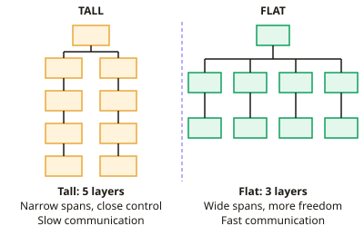

GCSE Business · Topic 5
Human Resources
This topic is about human resources, the people who make a business work.
We look at how businesses are organised, and how they recruit, train, keep and motivate their staff.
We also cover different types of employment contract, and how employers and employees work together.
- 5 subtopics
- 196 questions
- Free: 5.1 notes and 10 questions
In this topic
- 5.1Organisational structures: hierarchy, spans of control, delegation, centralisation, and flat vs tall structuresFree below · 47 questions
- 5.2Recruitment and selection: job descriptions, person specifications, internal vs external methods and selection techniquesOpen in Full Marks · 32 questions
- 5.3Training, development and staff retention: induction, on-the-job and off-the-job training, and appraisalOpen in Full Marks · 37 questions
- 5.4Motivation: financial methods (pay, bonuses, commission) and non-financial methods (job enrichment, flexible hours, recognition)Open in Full Marks · 39 questions
- 5.5Employment patterns and flexible working: full-time, part-time, temporary, zero-hours and remote working, plus employer–employee relationsOpen in Full Marks · 41 questions
5.1 · Free notes
Organisational structures: hierarchy, spans of control, delegation, centralisation, and flat vs tall structures

Key points
- An organisational structure shows how a business is arranged into levels of authority and who is responsible to whom. It is usually drawn as an organisation chart.
- The hierarchy is the layers of authority from directors at the top to operatives at the bottom. The chain of command is the route orders pass down and information passes up.
- Span of control is the number of subordinates who report directly to one manager. A manager with 8 direct reports has a span of 8. Count only direct reports, not staff further down.
- Number of staff ÷ span of control gives the number of managers needed. For example, 240 workers ÷ 12 per supervisor = 20 supervisors.
- A tall structure has many layers and narrow spans. It gives close supervision and clear promotion steps, but slow communication and high management wage costs.
- A flat structure has few layers and wide spans. It gives faster communication, lower costs and more empowerment. However, managers can be overloaded, supervision is weaker and there are fewer promotion steps.
- Delegation means passing authority for a task or decision to a subordinate. The manager stays accountable for the result. It frees managers' time and motivates and trains staff, but the task may be done badly.
- In a centralised structure, decisions are made at the top or head office. This gives consistency and tight control, but decisions are slow, ignore local knowledge and can demotivate staff.
- In a decentralised structure, decisions are made lower down, for example by branch managers. This gives faster, more local decisions and more motivation, but less consistency and weaker control.
- Delayering means removing layers of management. It cuts wage costs and shortens the chain of command. However, spans widen, workloads rise and redundancy costs and lower morale are possible.
- Match the structure to the context. Small start-ups are usually flat, while large multinationals often need more layers or decentralised branches. Exam answers should justify the choice for the business given.
- Communication in business can be written (letters, reports), oral (meetings, phone calls) or digital (email, messaging, video calls). Good communication helps staff understand their tasks and feel valued.
- Barriers to communication include jargon, too many layers in the hierarchy, poor technology and distance. Insufficient communication leaves staff confused and demotivated; excessive communication (information overload) wastes time and buries important messages.
In more detail
- Worked structure: 1 director → 3 managers → each with 5 supervisors → each with 10 workers. The structure has 4 layers, the director's span is 3, and there are 3 × 5 × 10 = 150 workers.
- Delayering saving: removing a layer of 5 supervisors on £32,000 each saves £160,000 a year, but the managers' spans of control become wider.
- Match the structure: a fast-moving tech start-up suits a flat, decentralised structure, while a bank that needs strict rules and consistency suits a more centralised one.
- Width vs height: span of control is about width (people per manager), while the chain of command is about height (layers from top to bottom).
Practice
Organisational structures: hierarchy, spans of control, delegation, centralisation, and flat vs tall structures: 10 questions
Pick an answer to check it, or open the answer for the explanation.
1. A manager directly supervises 9 employees. This number is known as the manager's…
- span of control
- chain of command
- level of hierarchy
- delegation
Show answer
A: span of control. Span of control is the number of subordinates who report directly to a manager. Here it is 9.
2. A business has seven layers of management and each manager supervises only three staff. Its structure is best described as…
- decentralised
- tall
- centralised
- flat
Show answer
B: tall. Many layers of hierarchy combined with narrow spans of control is the definition of a tall structure.
3. Which is a likely advantage of a flat organisational structure?
- Closer supervision of each worker
- Faster communication between top and bottom
- More layers of authority
- Clearer promotion ladder
Show answer
B: Faster communication between top and bottom. With fewer layers, messages pass between the top and bottom more quickly. The other options describe tall structures.
4. Which statement about delegation is correct?
- Decisions are made only at head office
- It increases the number of management layers
- Authority is passed down but the manager remains accountable
- Accountability passes fully to the subordinate
Show answer
C: Authority is passed down but the manager remains accountable. Delegation passes authority to complete a task to a subordinate, but the manager is still accountable for the outcome.
5. A supervisor has 3 team leaders. Each team leader manages 8 workers. What is the supervisor's span of control?
- 11
- 3
- 8
- 24
Show answer
B: 3. Span of control counts only direct subordinates. The supervisor directly manages the 3 team leaders, not the 24 workers.
6. Which is a disadvantage of a centralised structure for a national retail chain?
- Weak head-office control
- Slow decisions that ignore local conditions
- Too many people making decisions
- Inconsistent service between stores
Show answer
B: Slow decisions that ignore local conditions. Decisions made at head office can be slow and may not reflect local customers' needs. Consistency and control are strengths of centralisation.
7. A café chain lets each branch manager set local menus and hire staff without head-office approval. This is…
- delayering
- a tall hierarchy
- centralised decision-making
- decentralised decision-making
Show answer
D: decentralised decision-making. Decision-making power sits with branch managers lower in the structure, which is decentralisation.
8. A firm removes two layers of middle management (delayering). Which outcome is most likely?
- Shorter chain of command and lower wage costs
- Narrower spans of control
- Slower communication
- More promotion steps for staff
Show answer
A: Shorter chain of command and lower wage costs. Removing layers shortens the chain of command, speeds communication and saves managers' salaries. Spans of control widen.
9. The chain of command in a business is…
- the way the business is financed
- the line of authority from top to bottom
- the passing of tasks to subordinates
- the number of staff a manager supervises
Show answer
B: the line of authority from top to bottom. The chain of command is the route authority and orders follow from the top of the hierarchy down to the lowest level.
10. Firm A has 4 levels of hierarchy and 200 staff. Firm B has 8 levels and 200 staff. Which statement is most likely correct?
- Firm B has narrower average spans of control
- Both firms must have identical spans
- Firm A has the longer chain of command
- Firm A has narrower average spans of control
Show answer
A: Firm B has narrower average spans of control. With the same number of staff, more layers means fewer staff per manager on average, so Firm B's spans are narrower.
Keep going in Full Marks
Full Marks has 47 questions on Organisational structures: hierarchy, spans of control, delegation, centralisation, and flat vs tall structures (37 more than here), set out in practice levels. You also get notes and 3D models for all 5 subtopics of Human Resources, plus games, timed exams and past papers.